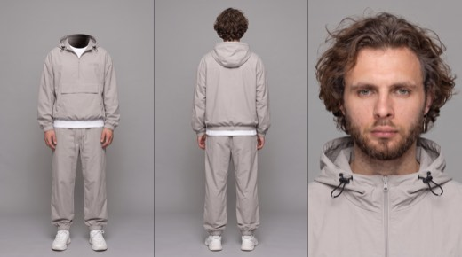
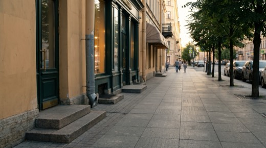
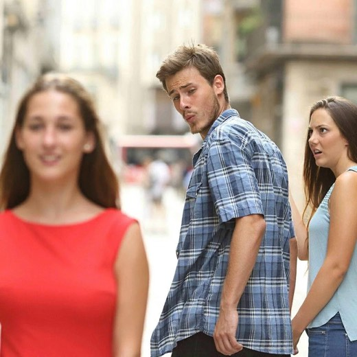
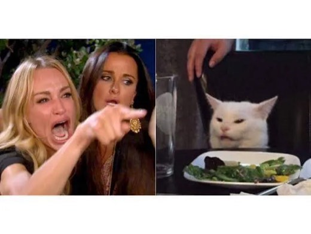
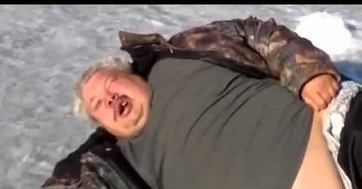
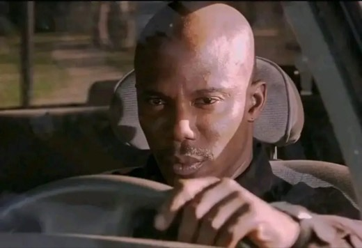

Немой влог
по Петербургу
Тридцать секунд одним непрерывным дублем. Герой не произносит ни слова — только брови, отвисшая челюсть и молчаливый смех. Все переходы делает сам телефон: разворот направо, наезд, наклон вверх. Улица подкидывает семь абсурдных сцен подряд, и ни одной склейки.
У Seedance 2.0 потолок — 15 секунд и 9 референсов. Этот ролик в неё физически не влезет: нужно 30 секунд и восемь карт одновременно. Версия 2.5 — обязательна.
Раскадровка
Семь сцен подряд, каждая держится 4–5 секунд. Камера не режется — она поворачивается. Именно этот ритм создаёт ощущение, что человек реально идёт по улице и не успевает переваривать увиденное.
Восемь референсов
Восемь карт: герой, локация и шесть персонажей улицы. Всё лежит в пакете одним архивом — вместе с текстом промпта. Скачивай, загружай по порядку и генерируй.






Промпт
Половина промпта — не про сюжет, а про то, как снято: дрожь руки, плавающая стабилизация, перестройка экспозиции на каждом повороте из тени в солнце, рыскающий автофокус, потеря качества на цифровом зуме. Убери эти строки — получится реклама, а не влог.
Vertical 9:16 smartphone vlog, shot on iPhone 17 Pro. ONE CONTINUOUS HANDHELD TAKE, ~30 seconds, every transition happens only through @image1 panning, tilting, zooming or walking. Brisk snappy pacing, quick whip pans, each beat lands in a few seconds, the camera never lingers. Location: sunny summer late afternoon on the Saint Petersburg street from @image2 — ochre lime-plaster facades, dark bottle-green shopfront joinery, grey granite paving slabs, granite entrance steps, cast-iron drainpipes, lindens along the kerb, cars parked at the curb, low warm sun coming down the street. The vlogger @image1: young man, curly brown hair, short beard, small silver earring, light grey nylon anorak and matching track pants, white tee, white sneakers. He stays SILENT for the entire video — he never speaks a single word. Every reaction is pure face and body: eyebrows shooting up, eyes going wide, jaw dropping open, a slow disbelieving blink, a small head shake, a silent stifled laugh. His phone IS the camera — it never appears on screen and he never holds a second device. The filming style is the core of the video: natural hand micro-shake and walking bounce, slightly floaty digital stabilization, deep focus with everything sharp edge to edge, flat untouched phone color straight out of the camera, natural HDR daylight with slightly clipped sky highlights, auto exposure and white balance visibly re-adjusting on every pan between shade and sun, quick autofocus hunting on fast pans, digital zoom bringing a slight quality drop and extra shake. Spontaneous amateur vlog energy, clean frame with no captions or overlays. Audio: raw street ambience only — traffic, distant horns, footsteps on stone, chatter, wind brushing the mic — plus the live sounds written into each beat. From the vlogger himself only breathing and one stifled laugh. Ambient diegetic sound throughout. 0:00–0:05 — Front camera, selfie mode: @image1 films himself at arm's length while walking down the granite pavement, face a touch overexposed by daylight, already mid-reaction. Behind his shoulder the couple @image3 passes the other way; a beat later the man stops and turns back, head over his shoulder, staring straight into the lens with a heavy unreadable look — the exact reference pose — while his girlfriend, gripping his hand, glares at him in outraged disbelief, mouth open. They hold the exact reference tableau. @image1 catches them in his own selfie frame, eyebrows jumping, mouth falling open in silent confusion, and keeps walking without a word. 0:05–0:09 — Same take, no cut: he flips the phone to the rear camera and whips it to the RIGHT — a café terrace on the ground floor. By the entrance the blonde woman @image4 stands alone holding a microphone to her own mouth, delivering an impassioned interview at full tilt to nobody at all — no interviewer, no crew, empty pavement in front of her. Her voice carries over the street noise. Silent shoulder shake from behind the camera. 0:09–0:13 — Without cutting, the camera slides and zooms further RIGHT along the same terrace: at one table the blonde woman @image5 is mid-meltdown — crying, shouting, jabbing an accusing finger across the terrace — while her dark-haired friend leans in, holding her back. Quick punch-in digital zoom to the opposite table: the white cat @image5 sits upright behind a plate of salad, perfectly calm and unimpressed. Autofocus hunts for a split second on the zoom. 0:13–0:17 — Without cutting, the camera TILTS UP the ochre facade directly above the terrace awning: a second-floor window stands open. Quick digital zoom in, the image gets slightly softer and shakier — the elderly woman @image8 in a bright red beret and black scarf leans on the sill and delivers a loud running commentary down at the street, gesturing with one hand, exactly the reference look. A short surprised breath from @image1 behind the camera. 0:17–0:21 — The camera drops back down and swings FORWARD — a few steps ahead on the same pavement the heavyset man @image6 lies flat on his back in his camo jacket, arms flung out, mouth wide open in a helpless fit of laughter, chest heaving, while pedestrians calmly step around him. @image1 walks around him as well, the camera holding on him, then tipping down at his face for a beat. 0:21–0:25 — Same take: he whips the camera to the LEFT, across the two-lane road — a sedan parked at the opposite kerb. Shaky digital zoom onto the driver's window: the man @image7 sits behind the wheel, one hand draped over the top of the steering wheel, staring straight into the lens with a heavy unblinking suspicious look, his eyes slowly tracking @image1 as he passes. 0:25–0:30 — The camera swings back forward and he flips to the front camera: his own speechless wide-eyed face fills the frame, jaw slack, one slow blink — and then, over his shoulder in the same frame, the couple @image3 walks past AGAIN in the identical tableau, the man still turned and staring into the lens, the girlfriend still outraged. @image1's eyes flick to them, then back to the lens, mouth open. The take ends there, no cut, still not a word from him.
Музыка
Музыка кладётся слоем при монтаже, в генерацию не идёт — иначе она перебьёт уличный звук, на котором держится вся достоверность. Два варианта настроения на выбор.
Instrumental french touch groove, 112 BPM, filtered disco loop, warm sidechained Rhodes chords, muted funk guitar, soft analog bassline, light shaker and dry kick, sunny relaxed summer mood, steady momentum with no build and no drop, consistent energy from start to finish, clean loopable structure, no vocals
Instrumental nu jazz, 104 BPM, brushed drums, upright bass walking line, soft Rhodes and vibraphone, muted trumpet melody, warm analog room tone, unhurried strolling mood, even energy throughout, no dramatic build, no vocals
- Музыка на −18…−20 dB под ambience. Уличный шум и голоса персонажей остаются первым планом — это не клип, это влог.
- Трек без дропа. Любой build-up подсознательно обещает монтажный стык, а его в непрерывном дубле нет — и зритель чувствует подвох.
- В Suno генерь 40–45 секунд. Первые пару секунд обычно мусорные, их всё равно отрезать.
- Ни одной склейки. Главный риск — модель всё-таки режет кадр на повороте. Если увидел стык, усиль формулировку про ONE CONTINUOUS HANDHELD TAKE и перегенерируй.
- Герой молчит. Он не говорит ни слова весь ролик — вся игра на лице. Открыл рот в речи — брак.
- Лица на своих местах. Сверь каждую сцену с таблицей референсов: чаще всего путаются @image4 и @image8.
- Телефона нет в кадре. Его телефон и есть камера. Появилась рука со вторым устройством — перегенерируй.
 ▶
▶
Хочешь снимать такое на заказ?
Собрать сцену на восьми референсах и удержать её одним дублем — это уже уровень продакшена. На обучении даю систему целиком: от первой генерации до портфолио, упаковки и первых клиентов. Приходи на экскурсию — покажу платформу изнутри и работы учеников, разберу твою ситуацию. Ничего продавать не буду.
Записаться на экскурсию → Бесплатно · созвон 30–40 минут · места ограничены